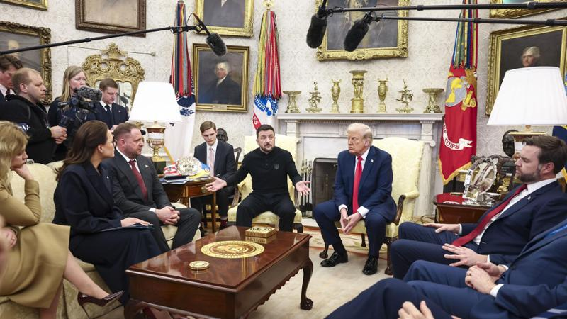

Il litigio tra Donald Trump e Volodymyr Zelens'kyj
Il 28 febbraio 2025 si è tenuto un incontro tra il presidente statunitense Trump e il presidente ucraino Zelensky, nel quale si sarebbe dovuto discutere sull'accordo delle risorse minerarie ucraine e sulla metodologia con cui approcciare la pace tra Russia e Ucraina.
Le tensioni durante il confronto
L'incontro è durato circa 50 minuti e si sono trattati vari argomenti. Ma la goccia che ha fatto traboccare il vaso tra Zelensky e Trump è stata la richiesta del presidente ucraino di garanzie di sicurezza per il suo paese, considerando che era già successo in passato che Putin sabotasse trattati di pace.
Le critiche del vicepresidente JD Vance
Il vicepresidente JD Vance ha criticato Zelensky per la percepita mancanza di gratitudine e rispetto verso gli Stati Uniti, sottolineando l'importanza del sostegno americano.
La risposta di Zelensky
A questo punto, Zelensky ha controbattuto che lui è sempre stato grato, ma che, in periodo di guerra, tutti ne risentiranno le conseguenze, anche gli Stati Uniti.
Le accuse di Trump
A questa dichiarazione, Trump ha accusato Zelensky di non essere pronto a fare i compromessi necessari per la pace, mettendo in discussione la sua leadership e affermando che stava giocando con la vita di milioni di persone e con la possibilità di una Terza Guerra Mondiale.
Fonti: Today, Il Fatto Quotidiano, TGcom24, Truth